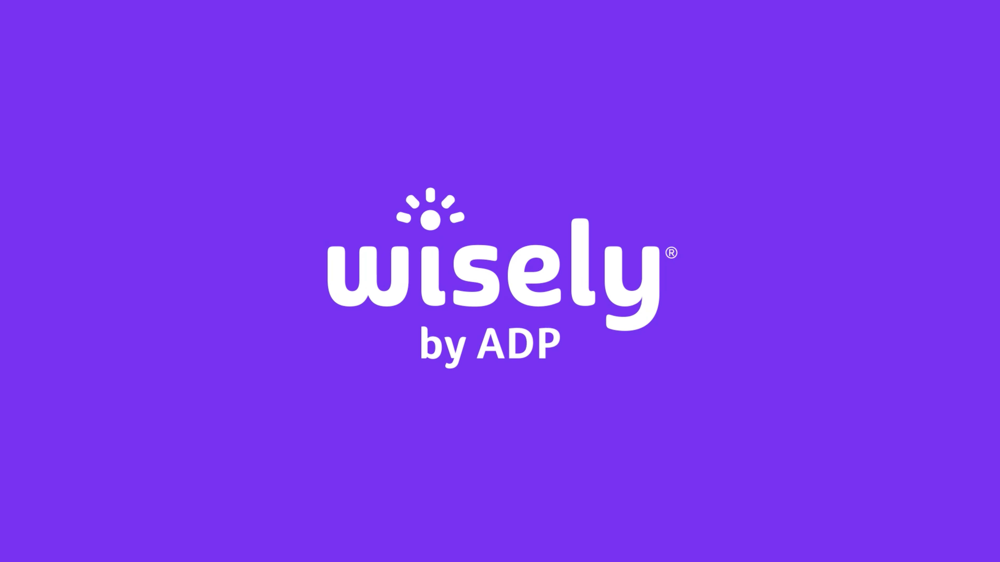
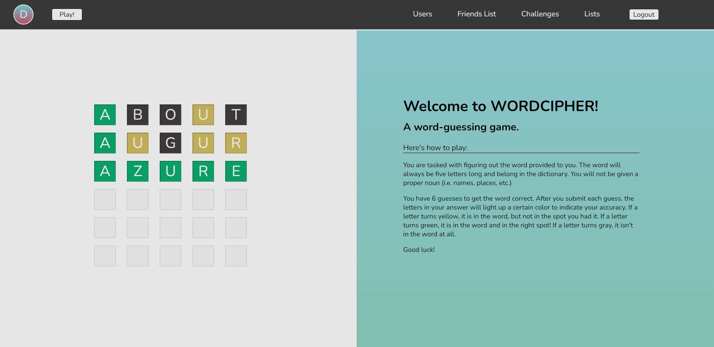
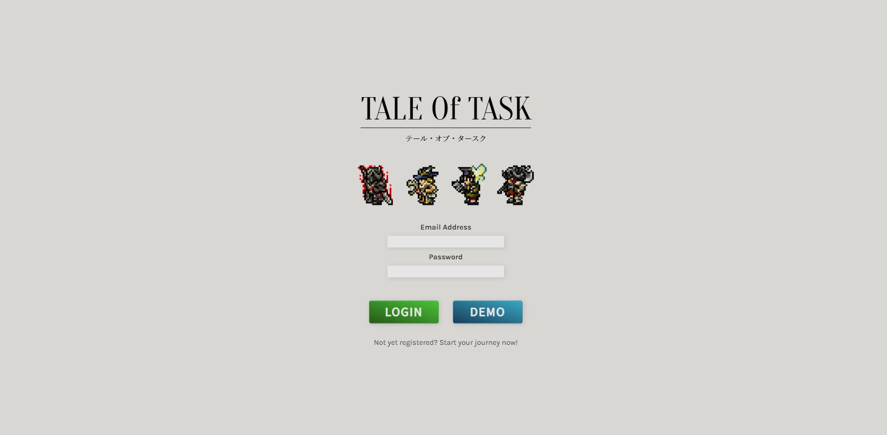
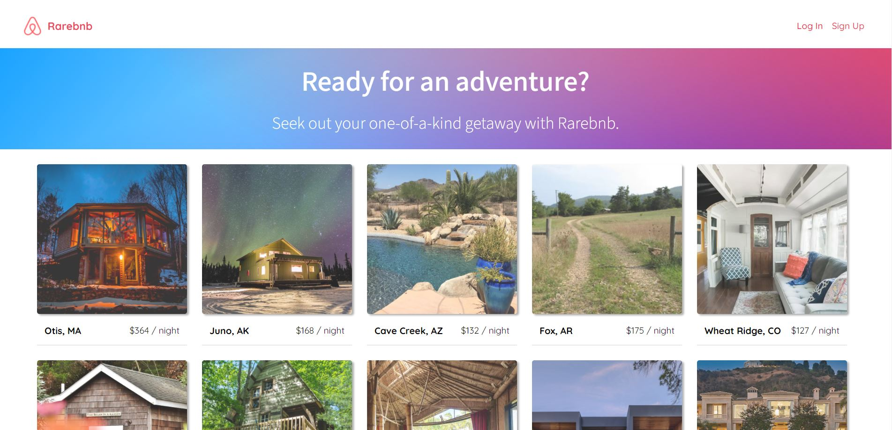
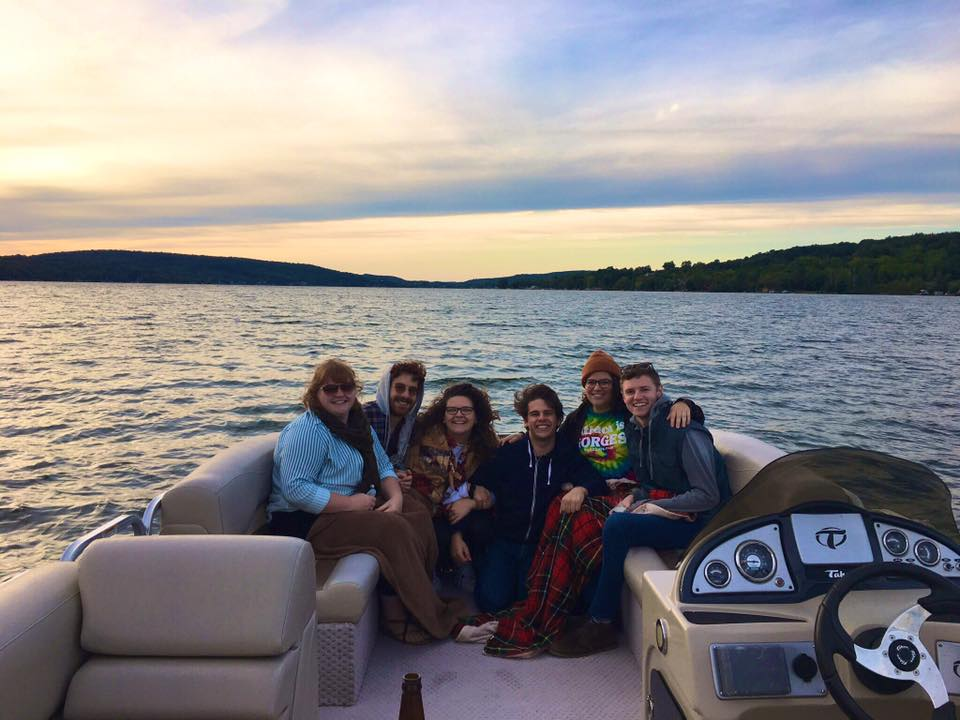

Software development is the nexus
between problem-solving and expression.
It was during my first few days of coding that I realized programming is just an exercise in theme and
variations — taking a melody or chord progression from one piece of music, and adapting or expanding on
it to create something brand new. As I continued to code, it became even clearer to me that this
newfound passion of mine was a brilliant intersection of critical thinking and expression. That was when
I knew I wanted to become a software engineer.
I see coding the same way I see music — most of the time, it's just the culmination of a bunch of ideas
that are repurposed, adapted, and expanded on to create something brand-new.
Projects
Professional Work - Nuvalence

ADP Wisely - Push Provisioning Plugin
A plugin for the ADP Wisely app that allowed users to easily provision their Wisely cards for the Apple Wallet.
- Built a push-provisioning plugin for the Apple Wallet, which interacted with the Apple SDK, Wisely backend
server, and Wisely frontend.
- Took ownership of developing the Objective-C plugin with no prior experience with the language or mobile development.
- Modified the Wisely React frontend to consume the new plugin, creating and updating necessary RxJS observables, corresponding TypeScript interfaces, and the like.
NYS OCM - Application Portal
An application portal built to assist NYS OCM examiners with viewing, sorting, and reviewing license applications.
- Developed the application’s frontend with two other engineers, allowing users to easily retrieve and sort applications, view application
data, assign internal users to applications, and move applications through a determined workflow process.
- Refactored code to allow for a dynamic, configuration-driven frontend application that could be easily maintained
by the client’s own engineering team.
- Collaborated with Product Leads and UX Designers to create an efficient, easy-to-use, custom user experience for the client.
- Mapped data from BigQuery datasets via JavaScript cloud functions that were run in GCP (Google Cloud Platform).
- Owned application deployment windows on a rotation with other engineers, utilizing GCP and Github for CI/CD.
- Detailed application development and usage in thorough application documentation, including how to add elements to existing and new application pages, from the extraction of BigQuery data to the use and modification of custom components on the frontend.
Personal Projects

Wordcipher
A re-creation of the popular word-guessing game, Wordle.
- Developed custom JavaScript game logic to listen for specific keypresses
and dynamically update elements in the DOM, ultimately creating a clean, intuitive, and
enjoyable experience for players.
- Integrated the WordsAPI to fetch random words for the game and send queries
on form submissions to check the validity of user-input words.
- Designed additional social features, including friends lists, the ability to send challenges
to friends, and play games with words from user-generated lists, all made possible with join
tables and database queries in a Flask / PostgreSQL backend.

Tale of Task
A gamified task management app where users level up their hero by staying on top of their daily
to-do list.
- Employed extensive use of DOM manipulation to quickly update information on
the page without the use of other rendering technologies like React/Redux.
- Adhered to best practices for RESTful routing, ensuring a clean transfer of
data from the backend to the frontend and vice versa.
- Designed a game-inspired interface through the use of CSS and custom JavaScript
logic to reward users for completing their tasks.
Fun Fact: This was my first project!

Pro.Gram
An Instagram inspired photo-sharing app.
- Collaborated with three other engineers to create a seamless social experience where users
are able to follow others, view a custom feed for users they follow, explore all uploaded
photos, and easily like and comment on posts.
- Optimized render times through the use of state with React.js / Redux.js
technologies, allowing for data to be displayed on the page without the need for hard
refreshes.
- Implemented modals with React context to lessen the amount of page
navigation incumbent upon the user.

Rarebnb
A spot-booking app based on AirBnB.
- Enabled comprehensive error handling through a combination of Sequelize ORM
validations and frontend custom validations for both a cleaner database and
more user-friendly experience.
- Leveraged React’s state and selector capabilities to render edit and delete
options only for content owned by logged-in users.
- Thoughtfully organized and implemented React components to ensure clean
code and frontend responsiveness.
Sorry, this one isn't live any more. Ask me about it!
Here's my story.
Growing up, I spent a lot of time
on the computer.
From age 9, when I thought creating PowerPoint presentations on who knows what was literally the coolest
thing ever, to middle and high school when I
was staying connected with friends online — playing games, chatting on AIM, or eventually posting on
each others FaceBook walls. My
studies led me to pursue music performance, education, and ultimately administration, but tech was what
always felt like home.
Even though it was always on
my
mind, it took me a while to dive into programming.
How was someone like me, who didn't have a computer science degree, ever supposed to get a job in the
tech industry? But as soon as I said "screw it"
and started learning to code on my own, I was hooked. I decided to drop everything I was doing at the
time — most notably my job
as the Volunteer Coordinator for a well-known American opera company — to devote my time to honing my
coding skills and becoming a full-time developer.
I attended App Academy, a full-stack software engineering immersive program, where I spent countless hours studying and honing new skills (while drinking countless cups of coffee).
There, I delved into JavaScript, Python, database management with PostrgreSQL, API Design, and frontend development using React/Redux. I built full-stack projects, both alone and with collaborators (check some of those out above),
and I started truly thinking and working like an engineer.
Shortly after completing the program, I was hired as a full-time Software Engineer with a focus on frontend development at Nuvalence, a consulting company specializing in platform development and product management.
As it was my first professional engineering gig, I absorbed as much information as I could from my colleagues and got some extremely valuable real-world experience. I spent most of my time at the company working in Angular and TypeScript, specifically on a project with the
NYS Office of Cannabis Management. I also did some Objective-C mobile development while I was on a short, 2-month contract with ADP. In both engagements, I collaborated with fellow engineers, product managers, and designers on a daily basis,
regularly reviewed others code while getting feedback on my own, and contributed to team rituals like standups, retrospectives, planning sessions, and more.
I'm eager to put the skills I've learned in the tech industry over the past couple of years to use in a brand new role, in addition to the many I bring from my previous career in the arts (if you're interested in that experience, I'd be happy to connect over that too)!
Let's make something awesome together.
Some technologies I've worked with...
Want to get in touch? Send me a message!

{kind=link}
{kind=link}
{kind=link}